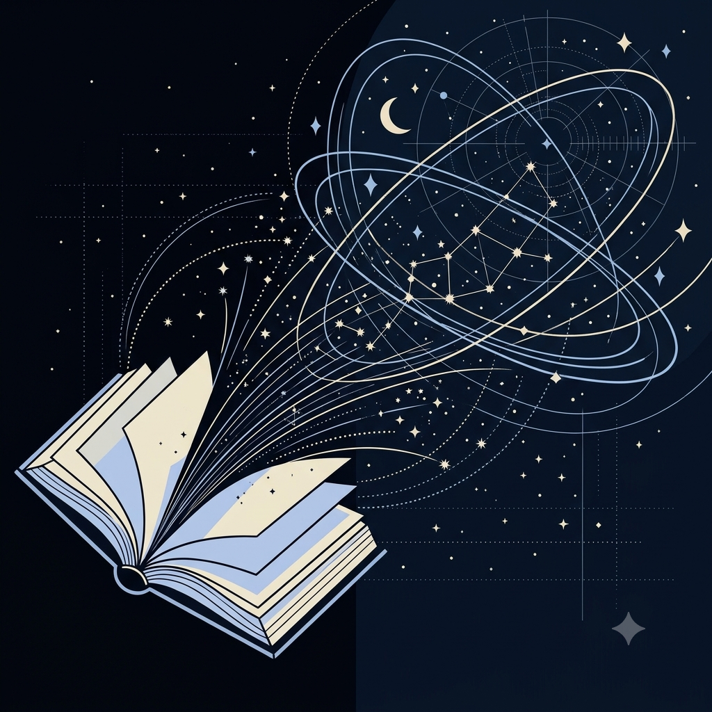

Astronomy and astrophysics content, online workshops and guest sessions.
Astronomy and astrophysics content, online workshops and guest sessions.
Our educational programs bridge curiosity with academic depth, bringing in Olympiad medalists and researchers to teach telescope mechanics, observational astronomy, and astrophysics fundamentals.